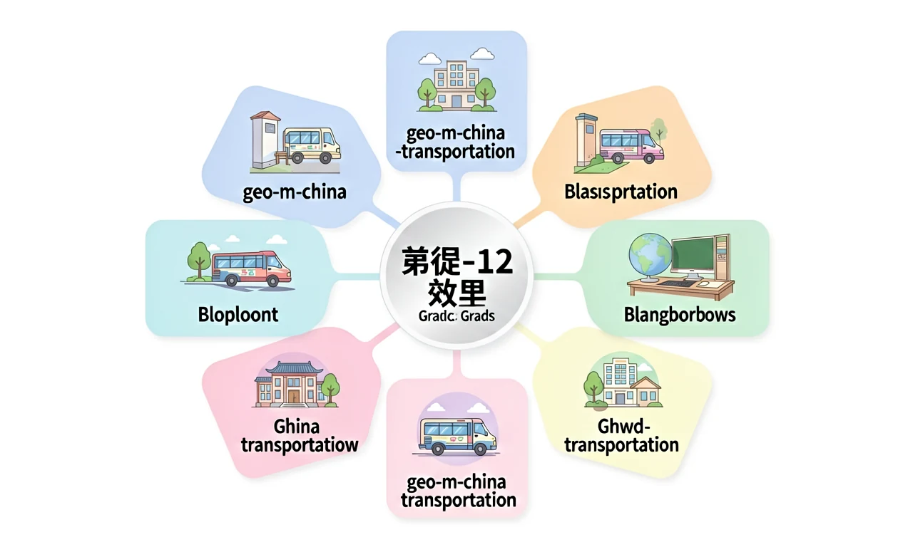
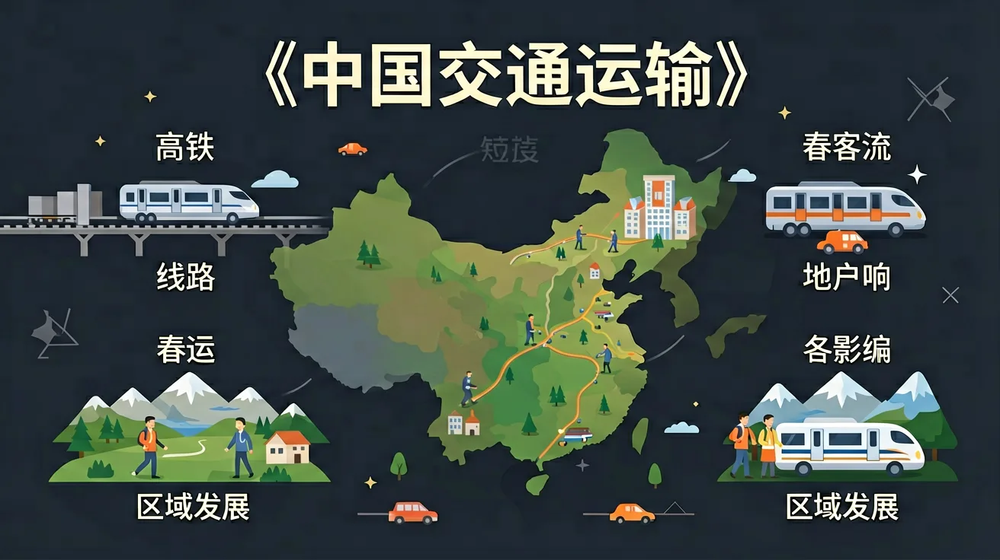
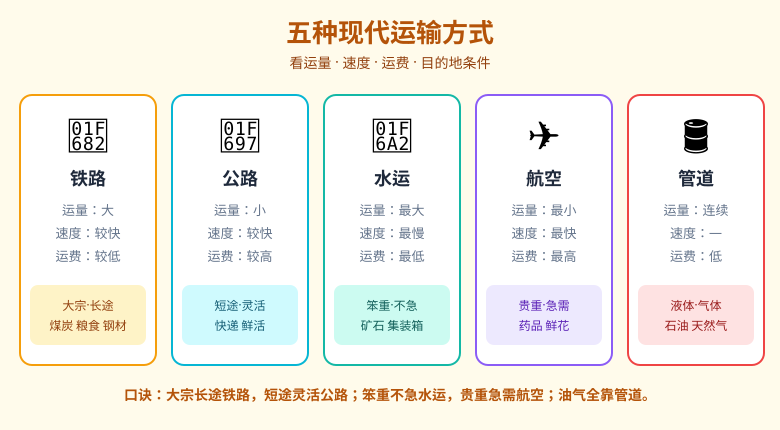
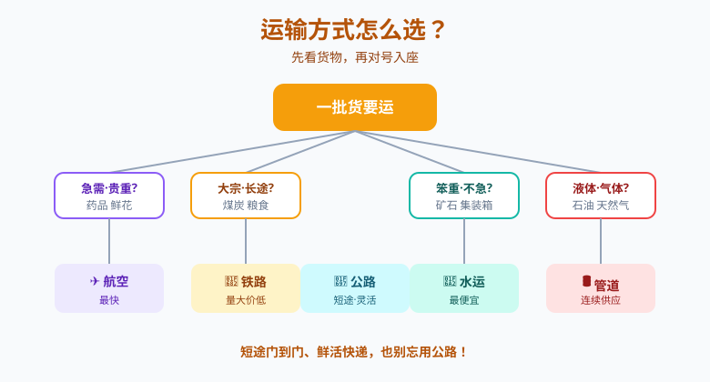

一张交通网，看懂货物怎么流动、城市怎么连接


你坐过高铁、收过快递。你知道人和货物都能从一个城市快速运到另一个城市，离不开火车、汽车、轮船、飞机。
中国的交通线为什么东边密、西边疏？一批货到底该走铁路、公路还是水运，怎么选才又快又省钱？
我们用一张中国交通网地图，看懂五种运输方式怎么分工，学会"什么货走什么路"，并理解高铁高速如何改变中国。
现代交通运输主要有五种方式，各有所长。
| 方式 | 运量 | 速度 | 运费 | 适合的货物/场景 |
|---|---|---|---|---|
| 🚂 铁路 | 大 | 较快 | 较低 | 大宗、长途：煤炭、粮食、钢材 |
| 🚗 公路 | 小 | 较快 | 较高 | 灵活门到门、短途：快递、鲜活 |
| 🚢 水运 | 最大 | 最慢 | 最低 | 大宗笨重、不急需：矿石、集装箱 |
| ✈️ 航空 | 最小 | 最快 | 最高 | 贵重、急需、生鲜：药品、鲜花 |
| 🛢️ 管道 | 连续 | — | 低 | 液体、气体：石油、天然气 |
记忆口诀：大宗长途走铁路，短途灵活用公路；笨重不急选水运，贵重急需坐飞机；油气全靠管道送。
同桌讨论 30 秒："水运运量最大、运费最低，所以大宗货物都该走水运"——对吗？
在地图上看中国主要铁路干线，找找分布规律。
拖动、缩放地图：灰色起伏是自带地形底图，橙色是省级行政区边界，红色线主要铁路干线——观察东部和西部的密度差异。
综合运量、速度、运费和目的地条件，选出最合适的运输方式。
情境①：1 吨活鱼从郊区鱼塘运到市区菜市场，要保鲜。
情境②：5000 吨煤炭从山西运到上海发电厂。
情境③：一批急救药品从北京紧急运往成都。
情境④：新疆的天然气长期稳定供应上海。
复制提示词到 AI 学伴，生成「中国交通运输」的示意图或结构提纲；也可以上传你手绘的示意图，请 AI 学伴点评。
复制后可粘贴到 AI 学伴继续对话。
❓ 为什么快递从广州到新疆比到湖南还贵？
❓ 坐高铁为啥比绿皮车贵这么多？
❓ 为啥西藏公路像过山车而江苏公路笔直？
学完这一课，这些问题你都能自信地回答。
像拆快递一样看运输方式（公路/铁路/水路/航空/管道）
地形图+人口密度图叠加看交通线分布
对比1吨海鲜和10吨煤炭的运输方案差异
用物流APP实时追踪不同运输工具时速
给山区特产设计最经济出山路线
✅ 黄金选航空，但精密仪器怕震动可能选公路
💡 忽视货物特性
✅ 冻土施工难度＞海拔（如唐古拉山段）
💡 单一归因
口诀：公铁水航管，货运看三样（重量/时效/价钱）
类比：运输方式像送外卖——步行送奶茶会洒（航空），电动车送冰箱不行（公路）


先独立作答，再点选项查看对错与错因。
下列哪项最能体现高铁对区域发展的影响？
以下关于中国交通运输布局的说法，正确的是：
中国发展高铁的主要目的是：
中国西部地区地形复杂，____运输在区域发展中发挥重要作用。
答案：航空
西部地区地形复杂，铁路、公路建设难度大，航空运输具有明显优势
长江作为黄金水道，____运输在流域经济发展中占据重要地位。
答案：水运
长江水运运量大、成本低，是流域经济发展的重要支撑
以下哪项最能体现交通运输与区域发展的关系？
分析中国高铁网络的空间分布特征及其影响因素